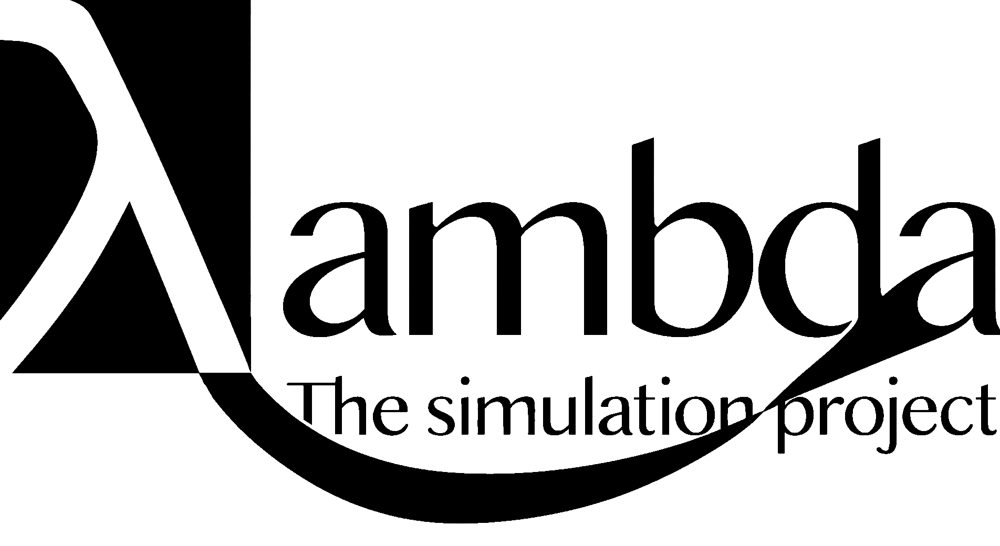

LambdaSim's main goal is to act as a digital twin of the world from a macroeconomic perspective and to simulate future scenarios by taking advantage of agent based modeing and various methods from multivariat data analysis.
Here is a peek at what's driving this project along with a project timeline.
Complexity arises when there are nonlinear relationships, feedback loops, and unstable dynamics. Examples range from predicting traffic jams in a bustling city to understanding how the weather will unfold based solely on initial conditions.
Fortunately, we can make significant progress in predicting complex systems by breaking down the system into smaller components often called agents. These agents follow a simpler set of rules regarding how they act with their environment. This approach allows us to iteratively simulate the behavior of the entire system. By trying different values for the variables that we can change in real-world scenarios within the simulation, we gain valuable insights about how the system as a whole will be affected. As a consequence, this insight enables us to make better, more informed decisions in the real world.
In science, testing a hypothesis is crucial for proving or disproving a theory. However, in economics, especially on large scales, it is both analytically unpredictable and often very costly or impossible to test new government policies, such as those listed here, before analyzing their real-world implementation results and aftereffects. Additionally, in democratic governments, where new politicians are elected every four years, a policy might be reversed before any meaningful impact, positive or negative, can be measured.
This is the problem that Lambdasim aims to tackle. By creating detailed and dynamic models of economic systems, simulations can predict the potential outcomes of various policies without the need for real-world implementation. These simulations can account for numerous variables and their interactions, providing a more comprehensive analysis of possible results. This approach allows policymakers to evaluate the potential impacts of their decisions in a controlled environment, reducing the risks, costs, and ambiguities associated with trial-and-error in real-world policy testing.
Highly relevant paper
The paper applies an Agent Based Model (ABM) model to simulate Austria’s medium-run economic recovery from COVID-19 lockdowns, finding the ABM’s results consistent with official forecasts by Austrian institutions.
Key Takeaways
- The paper argues ABMs can now be realistic, empirically validated tools for forecasting and policy analysis, challenging the idea that the status quo Dynamic stochastic general equilibrium models (DSGEs) are the only serious condender for economic forcasting.
- ABMs naturally incorporate bounded rationality, agent heterogeneity, and financial frictions—areas where DSGEs struggle without heavy extensions.
Why it matters
- This approach makes it possible to model the economy WITHOUT assuming that all agens behave perfectly rationally, while still providing forecasts as good as mainstream models.
- It opens the door for using ABMs in practical macroeconomic forecasting, stress testing, and analyzing the impact of policies at both aggregate and sectoral levels.
Read the Full Paper
Download the PDF of "Economic Forecasting with an Agent-Based Model"
Project Timeline
(Click the rows to expand)
Expand
February 2024 - Git repo started
This is where the whole project lies. Several different approaches lie here. Small experimental baby steps etc.
June 2024 - This website was created
With the purpose of sharing the project with friends, interested people, etc.
August 2024 - Market research and experimental development
Since this is a software-based project, there are no upfront costs. The time is well spent even if there isn't much direction yet. In parallel, the plan is to figure out what might be needed in the market and what already exists.
September 2024 - Relational Database
After brainstorming and research, the project landed on building a relational database — ideal for managing structured data and complex relationships. It ensures data integrity, scalability, and powerful SQL querying.
October 2024 - Accepted by NTNU as a student project
Thanks to supportive professors at NTNU's IE faculty, LambdaSim was granted as a course worth 7.5 study points, ensuring guidance and credit. More info: TFE4205 - Student Defined Development Project.
November 2024 and into the future...
Who knows what might happen here?
Hopefully, this will get clearer by the end of September.
December 2024 - Committing more to the project
Saying no is scary.
I declined an offer to work with a satellite communication system to dedicate more time to LambdaSim in summer 2025.
January 2025 - A new approach
The project is now quite concrete.
The current goal: develop a macroeconomic model that combines real-time data and complex adaptive systems to predict global trade dynamics and identify how different countries’ economic decisions affect each other.
July 2025 - A paper is found (linked above)
This paper is very useful and informative for me and this project because it provides detailed insights into economic forecasting using agent-based models, helping to shape the project’s approach and giving a solid theoretical and empirical foundation.
Read the paper directly: View the PDF
January 2026 - Work on bachelor thesis started
This bachelor thesis aims to explore the usefullness of agent based modeling combinee with behaveroal economics and game theory in predicting the outcomes of centan political desicions.
May 2026 - Bachelor thesis finished
The bachelor thesis called: Regional Impacts of Global Oil Price Volatility utilizes a two-way fixed-effects model to examine the extent to which changes in the world crude-oil price affect the regional share of highly skilled oil-related technical employment in Norway. It uses annual municipality-level panel data for 357 municipalities from 2008 to 2025.